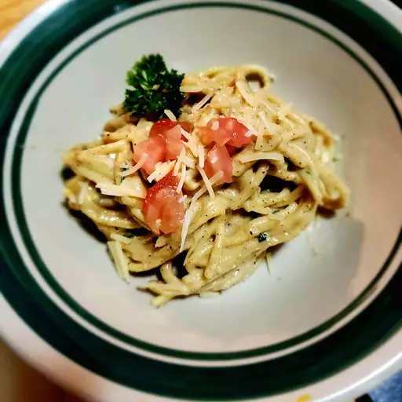

Creamy Garlic Pasta

Description
If you're in the mood for comfort food, look no further! This pasta dish
will leave you sated in just under thirty minutes!
The pasta creates a flavor explosion in your mouth and you will not be dissapointed! Your family
will ask you for the recipe!
Ingredients
- 2 teaspoons olive oil
- 4 garlic cloves, minced
- 2 tablespoons butter
- 3 cups chicken broth, or more as needed
- 1/2 teaspoon ground black pepper
- 1/4 teaspoon salt
- 1/2 pound spaghetti
- 1 cup grated Parmesan cheese
- 3/4 cup heavy cream
- 1 1/2 tablespoons dried parsley
Steps
- Heat olive oil in a medium pan over medium heat
- Add garlic and stir until fragrant, 1 to 2 minutes
- Add butter and stir constantly until melted
- Pour in 3 cups of chicken broth; add pepper and salt. Bring
to a boil
- Add spaghetti and cook, stirring occasionally until tender yet firm
to the bite, about 12 minutes
- Add more chicken broth if pasta starts to stick to pan
- Add Parmesan cheese, cream, and parsley and mix until thoroughly
combined. Serve immediately.
- Enjoy!